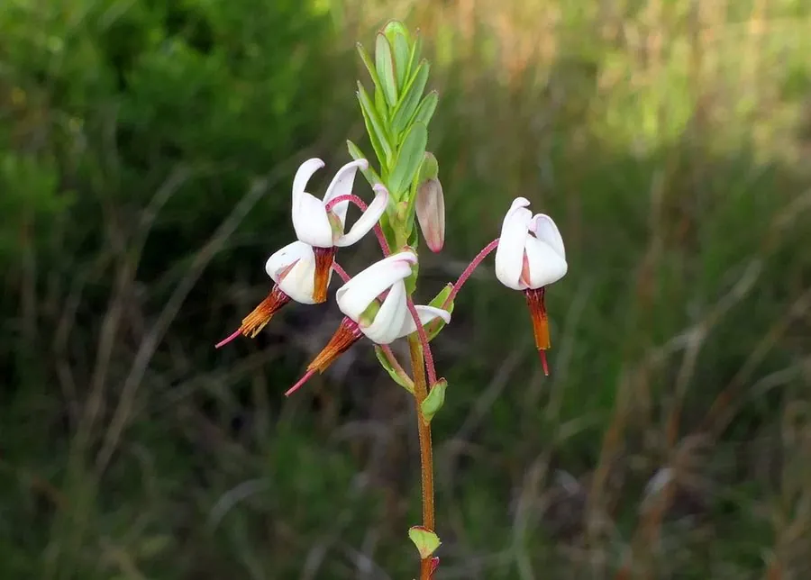

农作物与经济植物 · 植物界
蔓越莓 Vaccinium macrocarpon

蔓越莓是杜鹃花科匍匐小灌木，果实鲜红酸涩，富含原花青素，可制果汁、果干和果酱，是北美传统的湿地浆果。
- 分类
- 门被子植物门纲双子叶植物纲目杜鹃花目科杜鹃花科属越橘属
- 栖息环境
- 酸性泥炭沼泽与湿地，喜湿润和充足阳光
- 地理分布
- 原产北美东北部，主产于美国与加拿大，中国有少量引种
- 保护级别
- 暂无评估（栽培作物）
物种志
蔓越莓是杜鹃花科常绿匍匐小灌木，茎细长，沿地面蔓延，可长至 1–2 m，靠地下根状茎扩展，常形成连片地毯状群落。叶片小，椭圆形，革质，冬季常变红。花淡粉色，花冠四裂，花药伸出，形似鹤嘴。果实为浆果，椭圆形，成熟时鲜红或深红，果肉紧实，酸味强。
蔓越莓原产北美东北部的酸性泥炭沼泽，印第安人早已食用并用于保存食物。它喜酸性、湿润的沙质土壤，栽培时需筑池灌水，采收常采用“水收法”：注水后机械搅动，果实浮起后集中收集。果实酸涩，多加工成果汁、果干、果酱和调味酱，也可提取原花青素。美国马萨诸塞、威斯康星等地是主产区，果实耐贮存，是欧美冬季餐桌上的常见配料。
形态与习性
- 生长型匍匐常绿小灌木
- 叶片小，革质，冬季变红
- 花淡粉色，花药似鹤嘴
- 果实鲜红浆果，酸味强
- 采收常采用水收法
- 用途果汁、果干与果酱
趣味知识
- 蔓越莓采收时常向田里注水，让果实浮起后集中收集。
- 蔓越莓原产北美酸性沼泽，印第安人很早就有食用。
- 蔓越莓酸味很强，通常加工后才更适合食用。